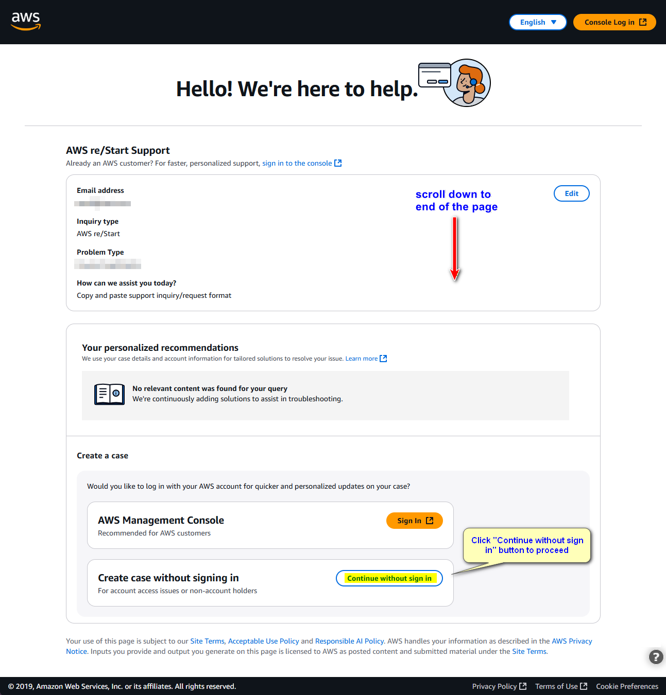
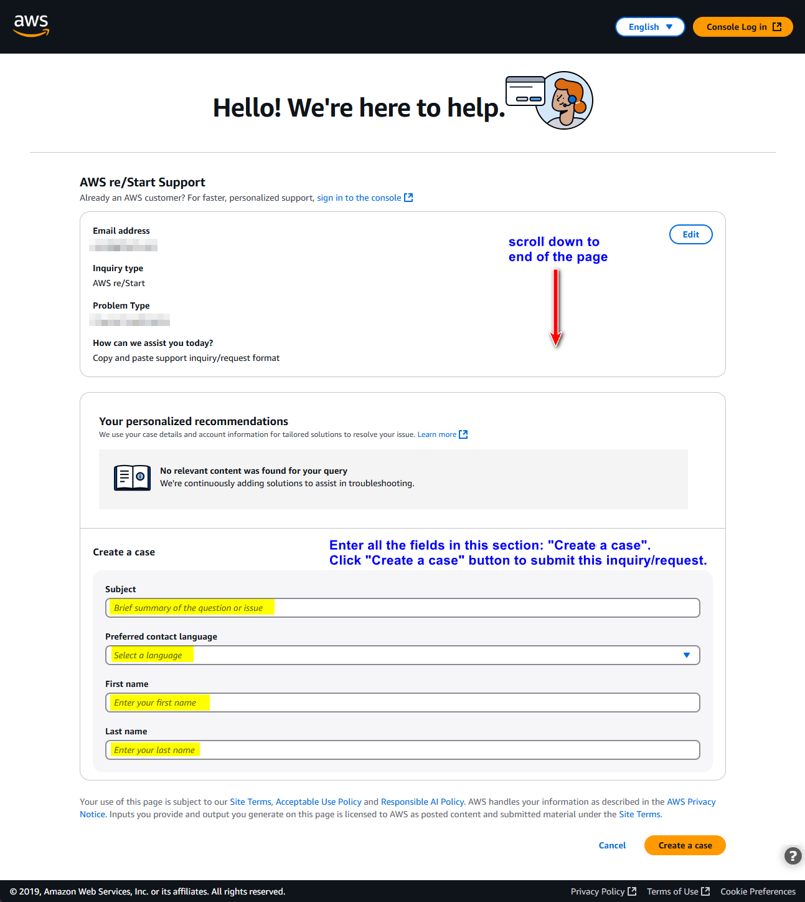

Step 1: Select Request Category
Choose the category that best describes your support request:
Review Your Request
Request Summary
📝 Next Steps:
- Click the button above to copy your request
- The AWS support form will open in a new tab
- Paste (Ctrl+V or Cmd+V) your request into the support form which says "How can we assist you today?"

- Complete any additional required fields
- Click "Continue" button to proceed to the next page
- Scroll down the page and click "Create case without sign in". A new section called "Create a case" appears.

- Complete the fields in "Create a case" and click on "Create a case" button to submit your request.

- You will receive an email with the case number. Wait for a security email (from: aws-cs-restart-form@amazon.com) and reply back to verify you are the person making the support request.
Request Copied!
Your support request has been copied to your clipboard.